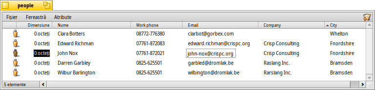

Română
Română Català
Català Deutsch
Deutsch English
English Español
Español Français
Français Italiano
Italiano Magyar
Magyar Polski
Polski Português
Português Português (Brazil)
Português (Brazil) Slovenčina
Slovenčina Suomi
Suomi Svenska
Svenska 中文 ［中文］
中文 ［中文］ Русский
Русский Українська
Українська 日本語
日本語Atribute
Atributele sunt câmpuri de date care aparțin unui fișier dar care nu fac parte din acel fișier, adică nu sunt adăugate dimensiunii fișierului și pot fi copiate sau modificate fără să atingi fișierul în sine. Sistemul utilizează aceste atribute pentru a stoca de ex. dimensiunea fișierului, tipul acestuia sau data ultimei modificări. Acest lucru este similar cu alte sisteme de operare și fișierele lor de sistem.
Ce este diferit este că puteți adăuga orice fel de atribut oricărui fișier și să-l afișați sau să-l faceți editabil într-o fereastră Tracker. Trebuie doar să definiți ce fel de atribut vreți să adăugați la un tip de fișiere (ex: șir, întreg sau timp) și să-i dați un nume și o descriere.
Fișierul în sine nici nu are nevoie de un conținut. Uitați-vă la aceste fișiere People de exemplu:
După cum vedeți acestea sunt toate fișiere de dimensiune 0 cu atribute atașate, atributul email de „John Nox” fiind editat chiar în Tracker.
Dacă indexați aceste atribute, așa cum sunt implicit fișierele People, Email sau audio, ele pot fi de asemenea căutate prin sistemul rapid de interogare Haiku.
 Atribute în Tracker
Atribute în Tracker
Atributele sunt afișate similar cu o bază de date sau foaie de calcul. Prin intermediul Tracker puteți alege atributele de afișat (coloane) și sorta corespunzător listele de fișiere (rânduri).
Pentru a face asta, deschideți o fereastră Tracker, dați clic pe meniul și selectați atributele pe care vreți să le afișați. Alternativ, pur și simplu dați clic dreapta pe antetul unei coloane și marcați elementele în meniul contextual. Puteți să rearanjați simplu coloanele prin tragerea&plasarea antetului coloanei. Mutarea unei coloane în afara unei ferestre este o metodă rapidă de eliminarea coloanelor de care nu aveți nevoie.
Dați dublu clic pe linia dintre două atribute în antet pentru a redimensiona automat o coloană la dimensiunea optimă.
Dați clic pe antetul unei coloane pentru a comuta ordinea de sortare de la ascendent la descendent. Puteți stabili o ordine de sortare secundară prin apăsarea tastei SHIFT în timp ce dați clic pe antetul unei coloane. Puteți sorta fișierele People după companie și în cadrul acestei ordini, să sortați după numele de contact, de exemplu. Vedeți captura de ecran de mai sus ca exemplu. Ordinea de sortare secundară este marcată printr-un indicator colorat mai dechis, de lângă antet.
Editarea acestor atribute este la fel de simplu ca redenumirea unui fișier: Dați clic pe o intrare sau apăsați ALT E și vă mutați prin atribute cu TAB și SHIFT TAB. ESC părăsește modul de editare fără aplicarea modificărilor.
Atribute în Terminal
Dacă preferați să utilizați linia de comandă sau plănuiți să lucrați cu multe fișiere utilizând scripting, există mai multe comenzi pentru controlarea atributelor din Terminal.
listattr
listattr listează atributele unui fișier dar nu afișează conținutul atributelor.
usage: listattr 'filename' ['filename' ...]
De la exemplul din captura de ecran de mai sus:
~/people ->listattr Clara\\ Botters
File: Clara Botters
Type Size Name
----------- --------- -------------------------------
MIME String 21 "BEOS:TYPE"
Text 14 "META:name"
Text 6 "META:nickname"
Text 1 "META:company"
Text 18 "META:address"
Text 8 "META:city"
Text 1 "META:state"
Text 1 "META:zip"
Text 1 "META:country"
Text 1 "META:hphone"
Text 13 "META:wphone"
Text 1 "META:fax"
Text 19 "META:email"
Text 1 "META:url"
Text 5 "META:group"
Raw Data 20 "_trk/pinfo_le"
131 bytes total in attributes.
Pe lângă toate atributele "META:*" care conțin informațiile de contact, există două atribute care sunt gestionate de către sistem:
BEOS:TYPE conține tipul fișierului ca șir MIME, aici "application/x-person". Determină pictograma implicită și aplicația care deschide fișierul atunci când ex: dați dublu clic pe el.
"_trk/pinfo_le" este atributul cu care Tracker monitorizează poziția pictogramei unui fișier.
catattr
catattr afișează conținutul unui atribut specific al unui fișier.
usage: catattr [--raw|-r] attr_name file1 [file2...]
Din nou exemplul nostru:
~/people ->catattr META:city Clara\\ Botters Clara Botters : string : Whelton
addattr
addattr adaugă un atribut la un fișier și/sau îi atribuie o valoare.
usage: addattr [-t type] attr value file1 [file2...]
or: addattr [-f value-from-file] [-t type] attr file1 [file2...]
Type is one of:
string, mime, int, llong, float, double, bool, icon, raw
or a numeric value (ie. 0x1234, 42, 'ABCD', ...)
The default is "string"
Deci, să spunem că Clara a obținut un job la multi-naționalul Barkelbaer Inc., completați atributul înainte liber „Companie” cu aceste date (care sunt de tipul „string”):
~/people ->addattr -t string META:company Barkelbaer\\ Inc. Clara\\ Botters
rmattr
rmattr elimină complet un atribut de la un fișier.
usage: rmattr [-p] attr filename1 [filename2...]
'attr' is the name of an attribute of the file
If '-p' is specified, 'attr' is regarded as a pattern.
Chiar dacă având în vedere simțul practic ar fi fost de ajuns să nu completăm atributul „Fax”, puteți să îl eliminați din fișierul lui Clara prin:
~/people ->rmattr META:fax Clara\\ Botters
copyattr
copyattr copiază atributele de la unul sau mai multe fișiere la alt fișier. Implicit conținutul efectiv al fișierului nu este copiat.
Usage: copyattr <options> <source> [ ... ] <destination>
Dacă totuși vreți să copiați atributele și datele fișierului în sine, puteți să adăugați opțiunea "-d" sau "--data".
Mai multe informații despre aceste comenzi și opțiunile lor pot fi găsite prin tastarea numelui comenzii urmat de "-h" sau "--help".